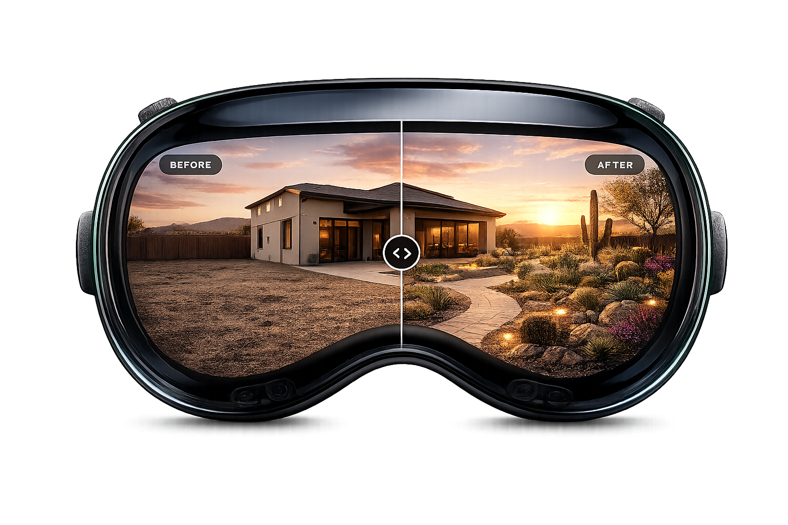

Design, visualize, and price outdoor spaces in real time with AR — all before breaking ground.

VerdeVision is a spatial design app for Apple Vision Pro. Drop life-size virtual plants into your real yard, walk around them, and judge the design — all before you buy a single thing. Here's a quick look:
VerdeVision brings your landscape design to life in spatial 3D — not on a flat screen, but standing right in your yard.
Drop virtual plants into your real yard through Apple Vision Pro. Walk around them. Look up at them. Judge exactly how that agave will fill the corner — before you buy it.
Move, rotate, and resize plants with intuitive spatial controls. Choose from a curated desert plant catalog with multiple container sizes per species.
Your placements are saved exactly where you left them using Apple's spatial anchoring. Close the app, come back tomorrow — your design is right there.
Save unlimited projects for different yards or clients. Undo freely, switch between designs, and compare options without losing any work.
Turn your design into a quote instantly. VerdeVision tracks every plant and generates a polished PDF estimate — ideal for landscapers and homeowners alike.
See how your landscape looks at different times of day. Preview lighting changes and mood before committing to any design decision.
Let clients walk through their future landscape instead of squinting at a 2D rendering. An immersive walkthrough that closes the deal.
Whether you're redesigning your own backyard or presenting a $50k project to a client, VerdeVision changes how you see the work.
Plan a yard renovation and see exactly what you're getting — before spending a dollar on plants or labor.
A powerful presentation and quoting tool that makes your proposals impossible to say no to.
Help customers visualize how plants will look at home — turning browsers into buyers.
Mock up communal green spaces at true scale before any shovels hit the ground.
Traditional landscape design software shows you a flat picture on a screen. VerdeVision puts the design in your space, at full scale.
Walk around a virtual Mexican Fence Post Cactus. Look up to judge its height. Step back and see how it frames the patio. You'll make better decisions faster — because spatially, it almost is real.
Pick a time and we'll walk you through the full spatial experience — live on Apple Vision Pro.
Select a date
Select a time
Choose a date to see available times.
Your details
We'll be in touch shortly with everything you need.
Ready to see your landscape before you build it? Book a live demo and experience VerdeVision on Apple Vision Pro.